1제품 소개 — HyperCube란?
HyperCube는 여러 대의 서버에서 돌아가는 수많은 프로그램(컨테이너)을 한 화면에서 지켜보고 관리하는 중앙 관제 플랫폼입니다.
큰 회사에는 보통 서버가 수십~수백 대 있고, 그 안에서 웹사이트·데이터베이스·AI 모델 같은 프로그램이 각각 "컨테이너"라는 작은 상자 단위로 돌아갑니다. 관리자가 이 상자들을 일일이 서버에 접속해 확인하는 것은 매우 번거롭고 위험합니다.
HyperCube는 마치 건물 전체를 보여주는 통합 관제실 모니터처럼, 모든 서버와 컨테이너의 상태·성능·문제를 한 곳에 모아 실시간으로 보여줍니다. 관리자는 관제실에서, 일반 사용자는 자기 자리에서 — 각자 필요한 만큼만 보고 다룹니다.
2왜 만들었나 — 해결하려는 문제
"서버를 직접 만지지 않고도, 누구나 안전하게 들여다보고 요청할 수 있게" 만드는 것이 목표입니다.
이전의 불편함
- 관리자가 서버마다 따로 접속해 상태를 확인해야 함 — 시간이 오래 걸리고 놓치기 쉬움
- 일반 개발자가 서버에 직접 접근하면 보안 사고·실수의 위험이 큼
- 컨테이너 생성·삭제 같은 중요한 작업이 승인 절차 없이 일어남
- 과거 성능 기록이 흩어져 있어 "언제부터 느려졌는지" 추적이 어려움
HyperCube의 해결 방식
- 한 화면 통합 관제 — 모든 서버·컨테이너를 실시간으로 한눈에
- 역할 분리 — 관리자와 일반 사용자가 권한에 맞는 화면만 사용
- 요청 → 승인 → 실행 절차 — 중요한 작업은 반드시 관리자 승인을 거침
- 성능 기록 보관 — 시간대별 추이를 차트로 보여줘 문제 원인 분석을 도움
3전체 데이터 흐름
데이터는 항상 현장 서버 → 중앙 서버 → 웹 화면 한 방향으로 흐르고, 명령은 그 반대로 전달됩니다.
Agent (에이전트)
각 서버에 설치된 작은 감시 프로그램. 컨테이너 상태와 CPU·메모리 등 성능을 수집하고, 중앙에서 내려온 명령(생성·재시작 등)을 실제로 실행합니다.
Backend (중앙 서버)
모든 Agent의 데이터를 모아 정리·저장하고, 사용자 권한을 확인하며, 승인·명령 전달을 담당하는 두뇌입니다.
Frontend (웹 대시보드)
사용자가 브라우저로 보는 모든 화면. 카드·차트·3D 지도·표 형태로 데이터를 보기 좋게 그려 줍니다. ← 이번 리뉴얼 대상
예시 — 사용자가 새 컨테이너를 만들 때
- ① 사용자가 웹 화면에서 "새 컨테이너 요청" 버튼을 누름
- ② 중앙 서버가 "승인 대기" 상태로 요청을 기록
- ③ 관리자가 승인 관리 화면에서 검토 후 승인
- ④ 중앙 서버가 해당 서버의 Agent에게 명령을 전달
- ⑤ Agent가 실제로 컨테이너를 생성하고 결과를 보고
- ⑥ 모든 화면이 실시간으로 새 상태를 반영
4두 종류의 사용자
HyperCube에 로그인하면, 계정의 역할에 따라 완전히 다른 화면 묶음이 보입니다.
운영을 책임지는 사람
전체 서버와 모든 컨테이너를 모니터링하고, 사용자의 요청을 승인하며, 템플릿·AI 모델 같은 공용 자산을 관리합니다. 화면 7개를 사용합니다.
서비스를 이용하는 사람
자신이 신청한 컨테이너만 보고 관리합니다. 서버에 직접 접속할 필요 없이 웹에서 생성·삭제를 요청하고 상태를 확인합니다. 화면 2개를 사용합니다.
5용어 사전
화면 곳곳에 나오는 단어들입니다. 디자인할 때 이 뜻을 알면 화면 구조가 더 잘 보입니다.
| 컨테이너 Container | 하나의 프로그램을 담은 독립된 실행 상자. 웹서버·데이터베이스·AI 모델 등이 각각 하나의 컨테이너로 돌아갑니다. 이 제품의 가장 기본 단위입니다. |
| Agent 에이전트 | 각 서버에 설치돼 상태를 수집하고 명령을 실행하는 감시 프로그램. "온라인/오프라인"은 이 Agent의 연결 상태를 뜻합니다. |
| 서버 / 호스트 | 컨테이너들이 올라가 있는 실제 컴퓨터. 화면에서는 server_63_dev처럼 이름으로 표시됩니다. |
| 스택 Stack | 서로 함께 동작하도록 묶인 컨테이너 그룹. 예: "웹앱 + 데이터베이스 + 캐시"가 하나의 스택. |
| 메트릭 Metric | 성능 수치. CPU 사용률, 메모리 사용량, 네트워크 속도, 디스크 사용량, GPU 사용률 등. |
| 토폴로지 Topology | 서버·컨테이너·네트워크가 어떻게 연결돼 있는지를 그림(지도)으로 표현한 것. 3D 화면이 이것입니다. |
| KPI | 화면 상단에 큰 숫자로 강조되는 핵심 지표. "지금 가장 중요한 수치"라는 뜻. |
| 템플릿 Template | 컨테이너를 만들 때 쓰는 미리 만들어 둔 설정 틀. 매번 처음부터 설정하지 않게 해 줍니다. |
| 워크스페이스 Workspace | 사용자가 직접 코드를 돌리거나 AI를 다룰 수 있는 작업 환경(예: Jupyter, Gradio). |
| 승인 Approval | 사용자의 생성·삭제 요청을 관리자가 검토해 허가/반려하는 절차. |
| 스파크라인 Sparkline | 카드 안에 들어가는 아주 작은 추세 그래프. 최근 흐름을 한눈에 보여줍니다. |
관리자 화면 (페이지 7개 · 모달 3개)
운영자가 전체 시스템을 감시하고 통제하는 화면들입니다.
로그인
모든 사용자 /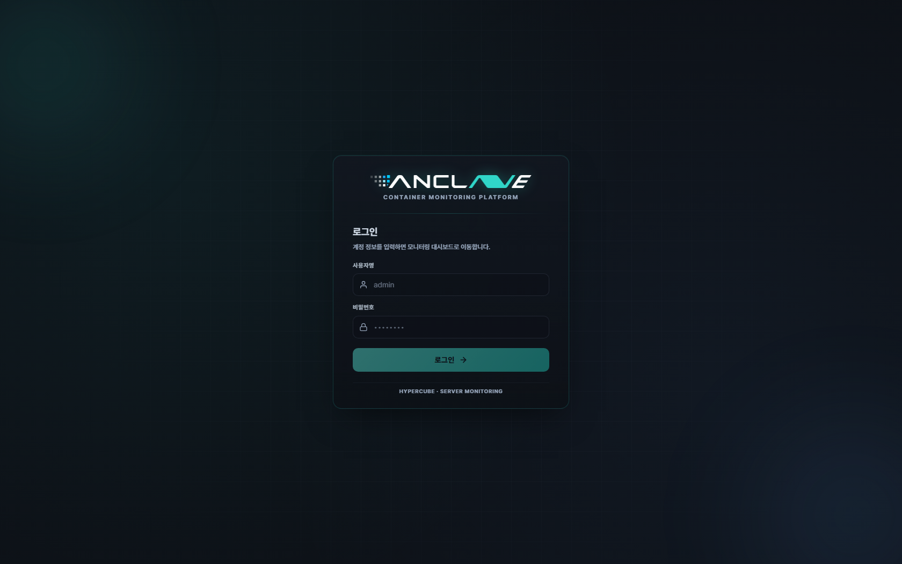
제품에 들어가는 첫 관문입니다. 아이디와 비밀번호를 입력하면, 계정 역할에 따라 관리자 화면 또는 사용자 화면으로 자동 안내됩니다.
화면에 보이는 것
- ANCLAVE 로고와 "Container Monitoring Platform" 슬로건
- 아이디 / 비밀번호 입력칸과 로그인 버튼
- 어두운 배경 — 관제 도구 특유의 톤
전체 서버 모니터링 (관리자 메인)
관리자 /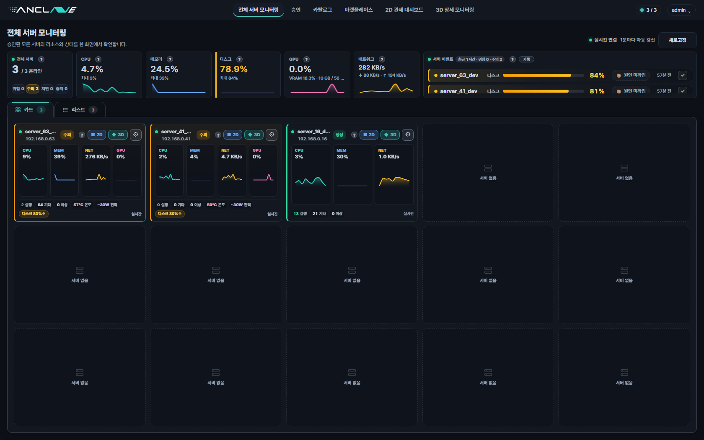
관리자가 로그인하면 가장 먼저 보는 화면. 회사가 가진 모든 서버를 카드 형태로 한눈에 펼쳐 보여 줍니다. 각 서버의 건강 상태를 빠르게 훑고, 이상한 곳을 클릭해 더 깊이 들어갑니다.
화면에 보이는 것
- 상단 요약 바 — 전체 서버 수, 평균 CPU·메모리·디스크 사용률, 실시간 연결 상태
- 서버 카드 그리드 — 서버마다 카드 1장. 이름, 상태, 자원 사용률, 작은 추세 그래프(스파크라인)
- 카드 / 리스트 보기 전환 — 표 형태로도 볼 수 있음
- 1분 단위 자동 갱신
2D 관제 대시보드
관리자 /server-2d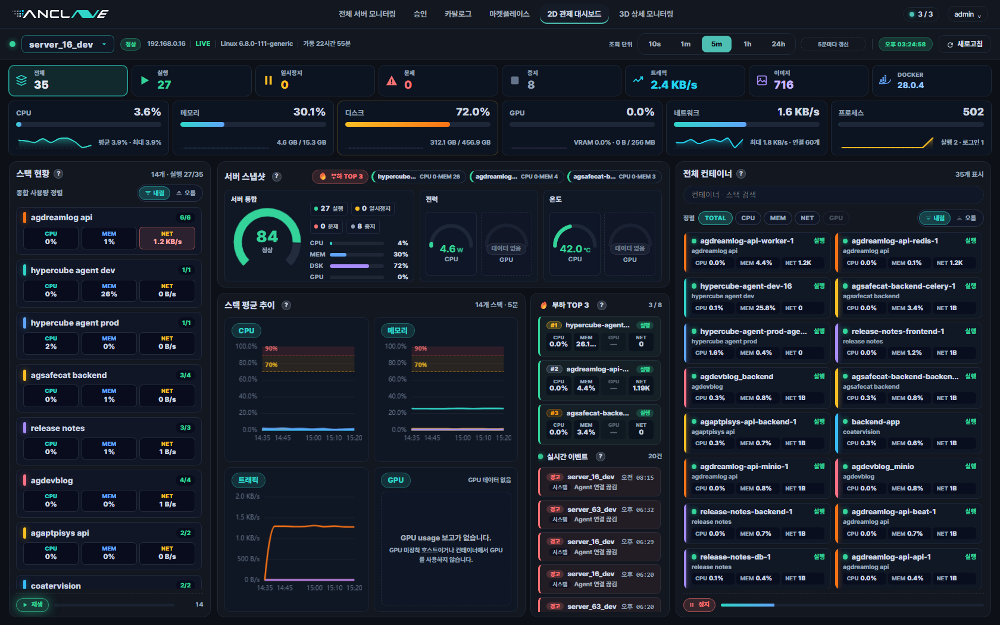
서버 한 대를 골라 그 안을 표와 차트로 깊게 분석하는 화면입니다. "이 서버가 왜 느리지?"를 파고들 때 사용합니다.
화면에 보이는 것
- 서버 선택 / 기간 선택 — 5분·6시간·24시간·7일 등 기간을 바꿔 추이를 봄
- 상단 KPI — CPU·메모리·디스크·GPU의 현재값 + 평균 + 최고치
- 컨테이너 상태 타일 — 실행 중 / 일시정지 / 문제 / 중지된 컨테이너 개수
- 시계열 차트 — CPU·메모리·네트워크·디스크·GPU의 시간별 변화 그래프
- 컨테이너 목록 표 — 각 컨테이너의 이름·이미지·자원 사용률
- 스택별 사이드 패널과 실시간 이벤트 로그
3D 상세 모니터링 (토폴로지)
관리자 /server-3d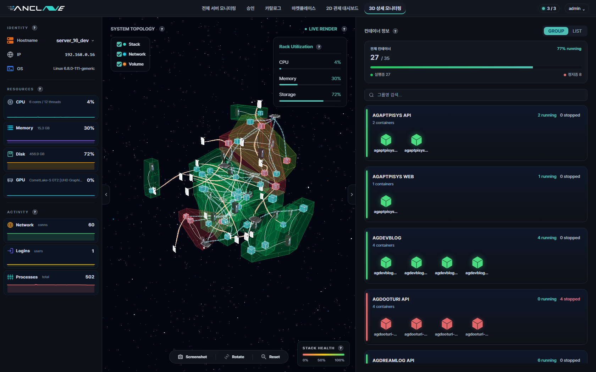
서버 안의 컨테이너들과 그 연결 관계를 3D 공간의 지도로 보여 줍니다. "무엇이 무엇과 연결돼 있나"를 직관적으로 파악하는 화면입니다.
화면에 보이는 것
- 3D 토폴로지 캔버스 — 정육면체 하나 = 컨테이너 하나, 선 = 네트워크·볼륨 연결
- 좌측 패널 — 선택한 서버의 CPU·메모리·디스크·GPU 종합 상태
- 우측 패널 — 스택별 컨테이너 목록과 실행/중지 상태
- 허브 토글 — 스택·네트워크·볼륨 연결 표시를 켜고 끔
- 드래그로 회전, 휠로 확대/축소. 정육면체 클릭 시 상세 정보
승인 관리
관리자 /admin/approvals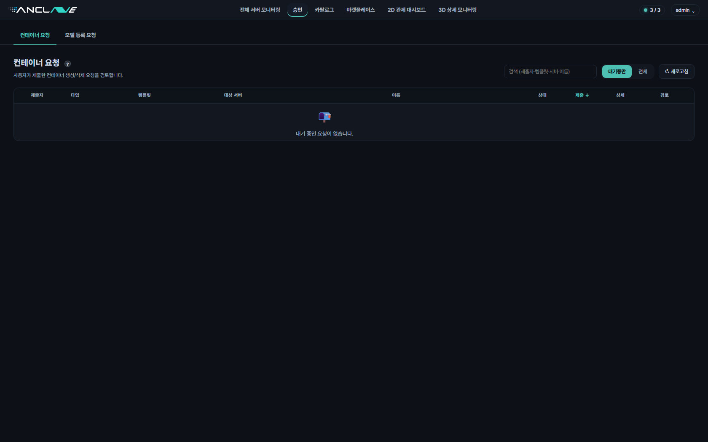
사용자들이 올린 컨테이너·AI 모델 생성/삭제 요청을 검토하고 승인하거나 반려하는 화면입니다. (스크린샷은 현재 대기 요청이 없는 빈 상태입니다.)
화면에 보이는 것
- 탭 2개 — "컨테이너 요청"과 "모델 등록 요청"
- 요청 목록 표 — 제출자, 요청 타입(생성/삭제), 템플릿, 대상 서버, 이름, 상태, 제출 시각
- 대기중만 / 전체 필터와 검색
- 승인 / 반려 버튼과 검토 메모 입력
- 요청이 없을 때는 안내 일러스트와 "대기 중인 요청이 없습니다" 메시지
컨테이너 요청 승인 모달
관리자 모달 승인 관리 화면에서 요청 행의 상세 버튼 클릭 시 열림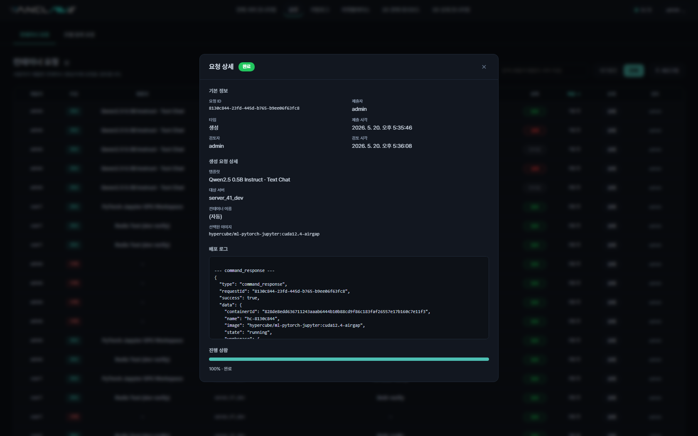
관리자가 사용자의 컨테이너 생성/삭제 요청 하나를 자세히 검토하고 승인 또는 반려하는 팝업창입니다. 승인 관리 표에서 어떤 요청을 클릭하면 그 위에 떠오릅니다.
화면에 보이는 것
- 기본 정보 — 요청 ID, 제출자, 요청 타입(생성/삭제), 제출 시각
- 생성 요청 상세 — 어떤 템플릿으로, 어느 서버에, 어떤 이름으로 만들지
- 배포 로그 — 실행 과정에서 오간 시스템 응답 기록
- 진행 상황 막대 — 처리 진척도(예: 100% 완료)
- 상단 상태 뱃지(대기·배포·반려)와 닫기(×) 버튼
- 요청이 대기중일 때는 하단에 승인 / 반려 버튼이 함께 표시됨 (스크린샷은 이미 배포 완료된 요청이라 버튼이 없음)
모델 등록 요청 승인 모달
관리자 모달 승인 관리 → "모델 등록 요청" 탭에서 상세 버튼 클릭 시 열림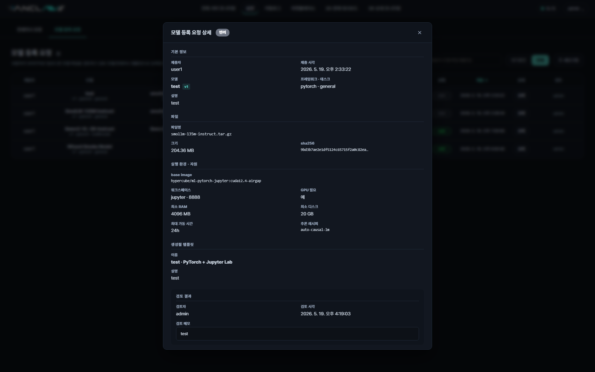
사용자가 업로드한 AI 모델 등록 요청을 검토하는 팝업창입니다. 승인하면 그 모델이 컨테이너 템플릿으로 등록되어 다른 사용자가 쓸 수 있게 됩니다.
화면에 보이는 것
- 기본 정보 — 제출자, 제출 시각, 모델명·버전, 프레임워크·태스크 종류
- 파일 정보 — 업로드된 파일명, 용량, 무결성 검증값(sha256)
- 실행 환경·자원 — 기반 이미지, 워크스페이스, GPU 필요 여부, 최소 RAM·디스크
- 생성될 템플릿 — 승인 시 만들어질 템플릿의 이름과 설명
- 검토 결과 — 검토자, 검토 시각, 검토 메모(처리된 요청일 때)
- 요청이 대기중이면 하단에 승인 / 반려 버튼 표시
카탈로그
관리자 /admin/catalog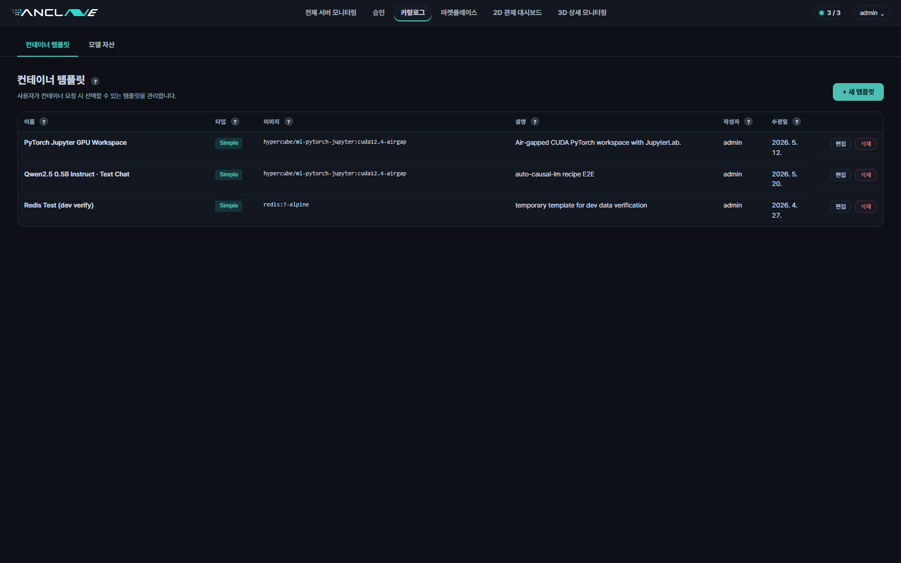
사용자들이 컨테이너를 만들 때 고를 수 있는 템플릿(설정 틀)과 AI 모델 자산을 관리하는 화면입니다.
화면에 보이는 것
- 탭 2개 — "컨테이너 템플릿"과 "모델 자산"
- 템플릿 목록 표 — 이름, 타입, 사용 이미지, 설명, 작성자, 수정일
- 각 행마다 편집 / 삭제 버튼
- 우상단 "+ 새 템플릿" 추가 버튼
템플릿 등록 모달
관리자 모달 카탈로그 화면에서 + 새 템플릿 버튼 클릭 시 열림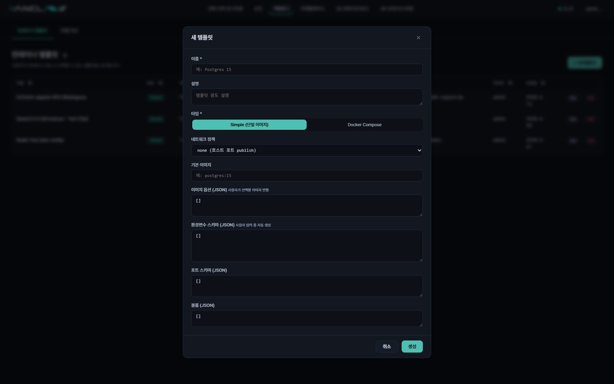
관리자가 새 컨테이너 템플릿을 만들거나 기존 템플릿을 편집하는 팝업창입니다. 여기서 만든 템플릿은 사용자의 "컨테이너 요청" 화면에 곧바로 선택지로 나타납니다.
화면에 보이는 것
- 이름 / 설명 — 사용자에게 보일 템플릿 이름과 용도 설명
- 타입 선택 — Simple(단일 이미지) 또는 Docker Compose 중 선택
- 네트워크 정책과 기본 이미지 지정
- 이미지 옵션·환경변수·포트·볼륨 스키마 — 사용자가 요청 시 입력할 항목을 정의 (JSON 형식)
- 하단 취소 / 생성 버튼
마켓플레이스
관리자 /admin/marketplace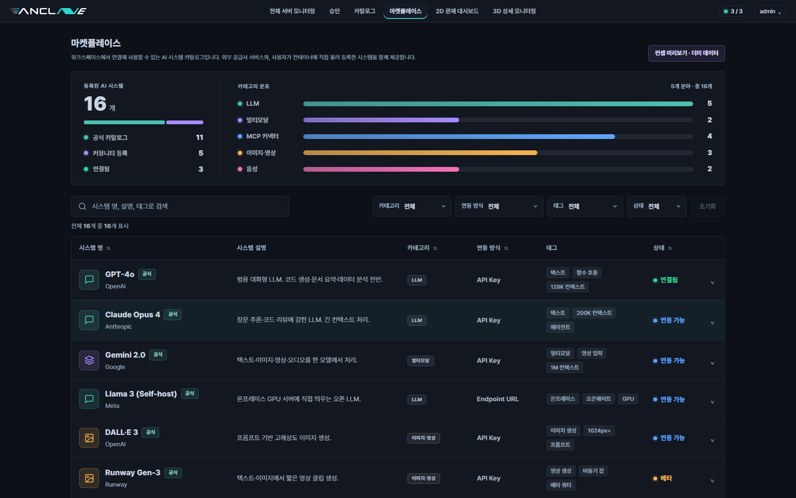
GPT-4o, Claude, Gemini 같은 외부 AI 서비스와 커뮤니티 AI 시스템의 카탈로그입니다. 관리자가 어떤 AI를 연결할 수 있는지 둘러보고 연동 방법을 확인합니다.
화면에 보이는 것
- 상단 요약 — 등록된 AI 시스템 수, 공식/커뮤니티 비율, 연결됨 개수
- 카테고리 분포 막대 — LLM·멀티모달·MCP·이미지·음성별 개수
- 검색 + 필터 — 카테고리·연동 방식·태그·상태로 거름
- AI 시스템 목록 표 — 이름, 제공사, 설명, 카테고리, 연동 방식, 태그, 상태
- 행 클릭 시 상세 펼침 — 연결 단계, 샘플 명령어, 가이드 링크
사용자 화면 (페이지 2개 · 모달 2개)
일반 사용자가 자기 컨테이너만 보고 다루는 화면들입니다.
내 대시보드
일반 사용자 /user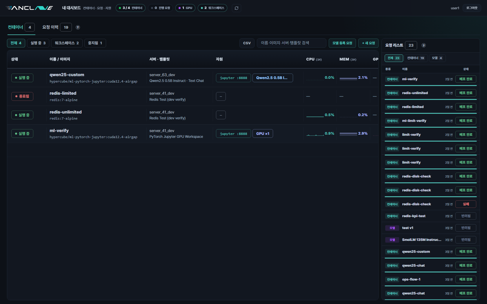
일반 사용자가 로그인하면 보는 메인 화면. 자신이 신청한 컨테이너 목록과 요청 진행 상황만 보여 줍니다. 관리자 화면과 달리 "내 것"만 나옵니다.
화면에 보이는 것
- 상단 KPI — 실행 중 컨테이너 수, 대기 중인 요청, GPU 사용량, 활성 워크스페이스
- 탭 2개 — "컨테이너"(현재 보유 목록)와 "요청 이력"(과거 신청 기록)
- 컨테이너 목록 표 — 상태, 이름/이미지, 서버·템플릿, 자원(포트·GPU·모델), CPU·메모리
- 우측 요청 리스트 — 모든 요청의 진행 상태(배포 완료·반려 등)
- + 새 요청 버튼, CSV 내보내기, 검색·필터
컨테이너 생성 요청 모달
일반 사용자 모달 내 대시보드에서 + 새 요청 버튼 클릭 시 열림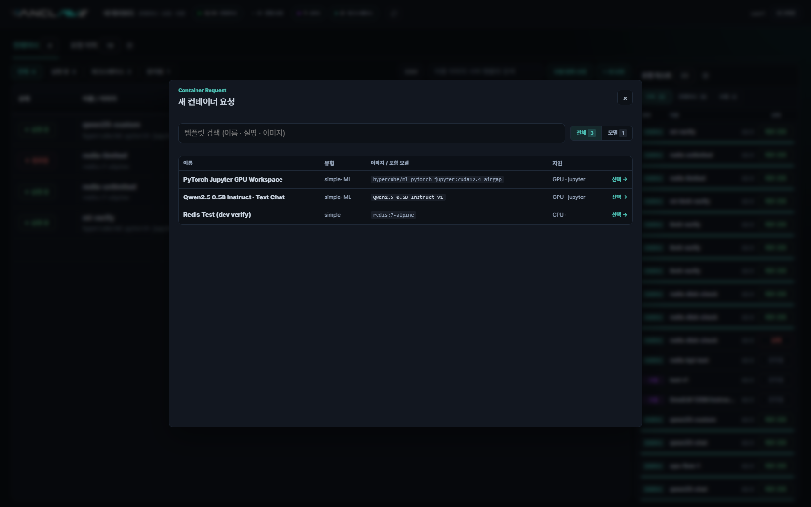
사용자가 새 컨테이너를 만들어 달라고 신청하는 팝업창입니다. 서버를 직접 다루지 않고, 준비된 템플릿을 골라 간단히 요청합니다.
화면에 보이는 것
- 템플릿 검색창 — 이름·설명·이미지로 템플릿을 찾음
- 템플릿 목록 표 — 이름, 타입(simple·ML 등), 사용 이미지, 필요 자원(CPU/GPU)
- 각 템플릿의 선택 버튼 — 고르면 다음 단계(서버 선택·자원 설정)로 진행
- 상단 제목 "새 컨테이너 요청"과 닫기(×) 버튼
모델 등록 요청 모달 (마법사)
일반 사용자 모달 내 대시보드에서 모델 등록 요청 버튼 클릭 시 열림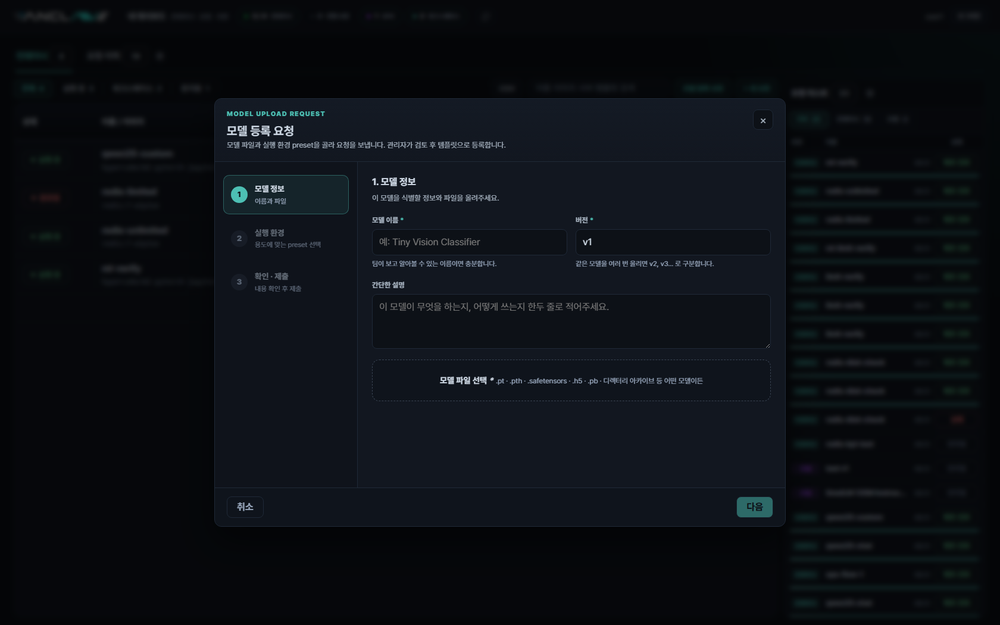
사용자가 자신의 AI 모델 파일을 올리고 등록을 신청하는 단계별 마법사 팝업입니다. 여러 단계를 거쳐 정보를 입력하고 마지막에 제출합니다.
화면에 보이는 것
- 좌측 단계 표시(스텝) — ①모델 정보 ②실행 환경 ③파일 제출의 진행 상태
- 1단계 입력칸 — 모델 이름, 버전, 간단한 설명
- 모델 파일 선택 영역
- 하단 취소 / 다음 버튼
컨테이너 상세
일반 사용자 /user/containers/{id}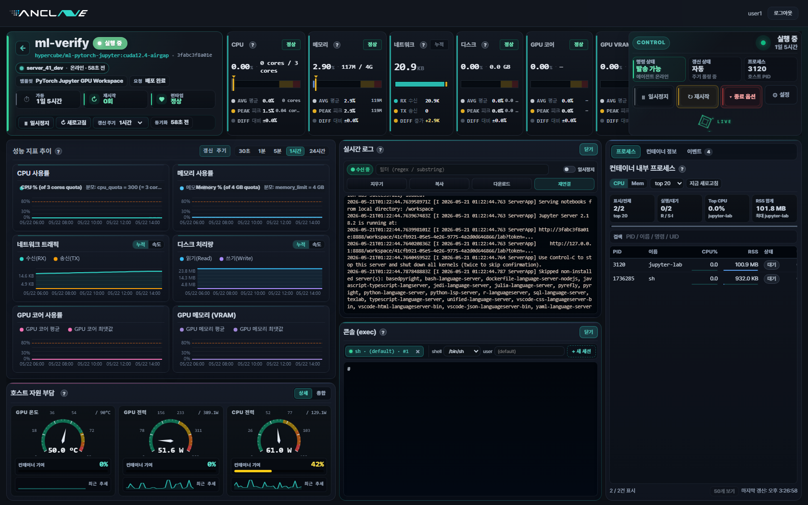
컨테이너 하나를 골라 건강 상태·성능·로그를 깊게 들여다보고 제어하는 화면입니다. 사용자가 가장 오래 머무는, 정보가 가장 풍부한 화면입니다.
화면에 보이는 것
- 상단 정보 바 — 컨테이너 이름, 상태, 이미지, ID, Agent 온/오프라인
- 운영 지표 — 가동 시간, 재시작 횟수, Health 상태
- 자동 진단 인사이트 — 재시작 반복·메모리 부족(OOM) 등 이상 징후 경고
- KPI 행 — CPU·메모리·네트워크·디스크·GPU의 현재/평균/최고
- 시계열 차트들 — 기간 선택(30초~24시간), 평균선 + 최고선
- 로그 / 프로세스 / 설정 패널 — 실시간 로그, CPU 상위 프로세스, 포트·환경변수
- 제어 버튼 — 시작·정지·재시작, Jupyter/Gradio 워크스페이스 열기
6디자이너를 위한 메모
현재 디자인의 특징
- 다크 테마 기반 — 관제실 모니터 같은 어두운 배경에 형광 초록 포인트 색
- 정보 밀도가 높음 — 한 화면에 카드·차트·표가 빽빽함
- 실시간 갱신 — 숫자와 그래프가 계속 움직임 (멈춤/일시정지 토글 있음)
- Figma 원본 디자인 파일 키:
MM5pHeO3gfXDchAlBVfs89
리뉴얼에서 고려하면 좋을 점
- 정보 우선순위 — 모든 화면이 데이터가 많습니다. "가장 먼저 봐야 할 것"을 키우고 나머지를 정리
- 상태 색 체계 — 정상/주의/위험을 일관된 색 규칙으로 (지금은 화면마다 조금씩 다름)
- 관리자 vs 사용자 톤 — 관리자 화면은 밀도 높게, 사용자 화면은 더 친절하고 쉽게
- 빈 상태(empty state) — 승인·요청 화면은 비어 있을 때가 많아 빈 화면 디자인이 중요
- 차트 가독성 — 시계열 차트가 곳곳에 있음. 색·범례·축 라벨의 통일된 스타일 필요
- 브랜드 정리 — 화면 브랜드(ANCLAVE)와 로고·favicon을 리뉴얼과 함께 확정
화면 한눈에 보기
| 관리자 페이지 7 | 로그인 · 전체 서버 모니터링 · 2D 관제 대시보드 · 3D 상세 모니터링 · 승인 관리 · 카탈로그 · 마켓플레이스 |
| 사용자 페이지 2 | 내 대시보드 · 컨테이너 상세 |
| 모달 5 | 컨테이너 생성 요청 · 모델 등록 요청 (사용자) · 컨테이너 승인 · 모델 승인 · 템플릿 등록 (관리자) |